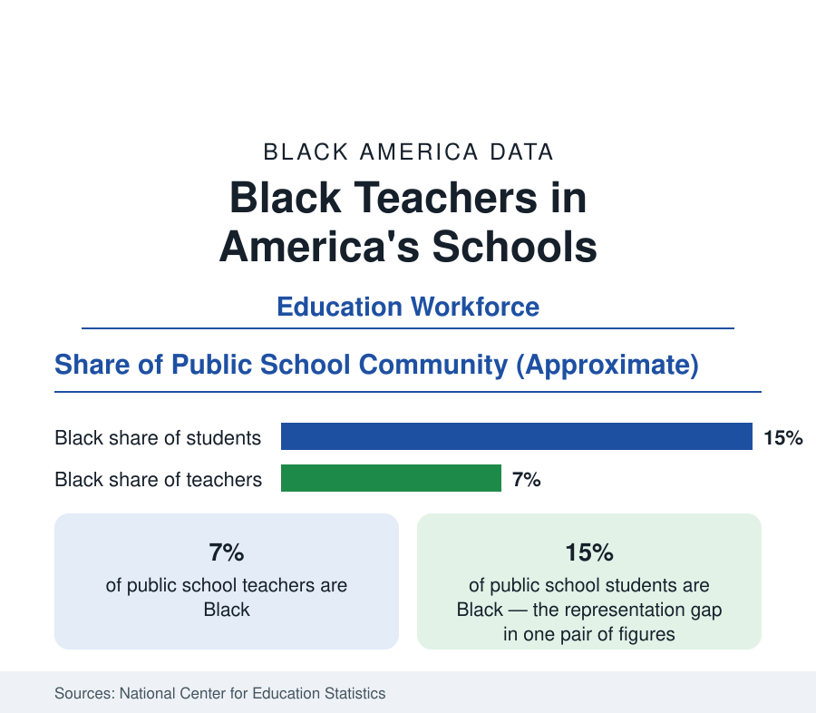

Black Education
Black Teachers: Seven Percent of the Faculty, Fifteen Percent of the Students
Black teachers are about 7 percent of the public school faculty teaching a student body that is 15 percent Black — and the research says the mismatch matters. The NCES data.

About 7 percent of America's public school teachers are Black. About 15 percent of its public school students are Black. The distance between those two figures — documented in the National Center for Education Statistics' workforce surveys — is one of the most studied numbers in education research, because a substantial body of evidence now shows that it is not a cosmetic mismatch: Black students taught by Black teachers, even briefly in elementary school, measurably change their trajectories. This article reports the workforce data and the findings built on it.
The Workforce as Counted
The National Teacher and Principal Survey counts roughly 3.2 million public school teachers, of whom about 220,000 — some 7 percent — are Black, alongside a Black share of about 18 percent among school support staff and roughly 11 percent among principals. The distribution is steeply geographic: Black teachers concentrate in the South and in urban districts, where they may form a third or more of a district's faculty, and are nearly absent from many suburban and rural systems. They teach in higher-poverty schools on average than other teachers, carry the same certification profile with somewhat less experience on the median — a function of when the profession opened to them at scale — and leave the profession at higher annual rates, the attrition finding that dominates the pipeline literature.
What the Research Finds
The landmark evidence comes from longitudinal student records. In the most widely cited study — following North Carolina and later national cohorts — a low-income Black student who had just one Black teacher in the elementary grades was substantially less likely to leave school without graduating and substantially more likely to report plans to attend college, with the largest effects for Black boys from low-income households; the researchers' subsequent work associates early exposure to a same-race teacher with higher college enrollment and completion. Related studies find Black teachers hold higher expectations for Black students' attainment — the expectation surveys show gaps of ten percentage points or more in predicted graduation for the same student — and assign discipline differently in the records data. The findings are presented here as the literature reports them: consistent in direction across datasets, debated in magnitude.
The Pipeline Problem
Supply runs through the education data of this section. Black college students choose education majors at rates that have declined across the past generation — teaching's relative pay and prestige fell as other professions opened — and the HBCUs, which by common estimates have produced roughly half of the nation's Black teachers across their history, now educate a smaller share of Black undergraduates than they did in the pipeline's peak years. Certification examinations screen out Black candidates at rates documented in the state testing data, a friction the literature treats as partly a preparation issue and partly a test-design one. Grow-your-own programs — recruiting paraprofessionals and community members, among whom Black staff are plentiful, into credentialed teaching — are the pipeline strategy with the strongest local results in the program evaluations.
Retention: The Other Half
Districts lose Black teachers faster than they hire them in the turnover data: annual departure rates for Black teachers run several points above the profession's average in the federal surveys, with working conditions — school leadership, discipline burdens, the informal cultural labor Black faculty describe in the qualitative literature — cited above pay in the exit interviews. The arithmetic consequence is a standing replacement problem: even where recruitment succeeds, the workforce share stays near 7 percent because the outflow matches the inflow. Teacher residencies and mentorship structures that pair novice Black teachers with veterans show the retention gains in the program data, and they cost less per retained teacher than repeated recruitment.
Reading the Teacher Data
The 7-and-15 pairing is the education section's most actionable statistic: a defined workforce, a defined student population, measured effects of closing the gap, and identified leak points — candidate preparation, examination screens, early-career attrition — at which the data say intervention works. Few subjects in this reference connect their numbers to their remedies so directly.
The principal data point the same direction: about one school leader in nine is Black, in buildings enrolling a far larger Black share of students.
More in Black Education
Black Educational Attainment: High School Parity, the College Gap
About 89 percent of Black adults hold a high school diploma and one in four holds a bachelor's degree or higher — the attainment ladder, the college completion gap, and the generational trend.
Historically Black Colleges and Universities: Enrollment and Degrees
More than 100 HBCUs enroll roughly 290,000 students and award about one in six Black bachelor's degrees — an outsized share from a small sector. The federal education data.
Black College Enrollment: 2.4 Million Students
About 2.4 million Black students are enrolled in American colleges — nearly two-thirds of them women. The NCES enrollment data by sector, level, and trend.
Source: National Center for Education Statistics, National Teacher and Principal Survey; Schools and Staffing Survey; Johns Hopkins / IZA same-race teacher research.